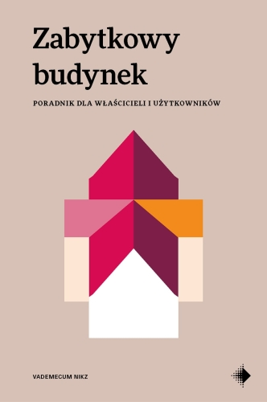
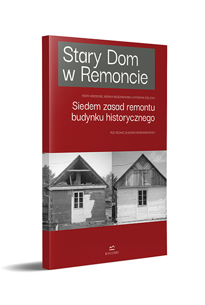
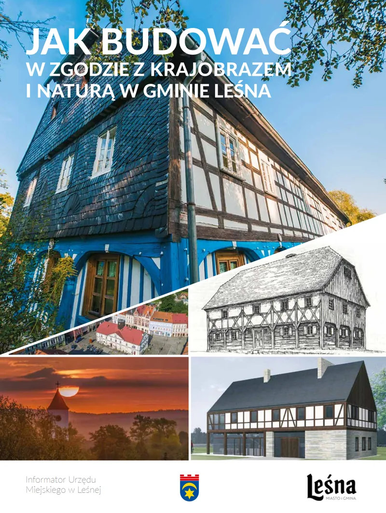

Historic Building: A Guide for Owners and Users
Katarzyna Sielicka
Home/Knowledge
We collect resources that help identify problems, ask the right questions and avoid decisions that damage historic buildings.
Looking for someone who really understands traditional materials and knows how to work on old buildings? We have brought together craftspeople and specialists who focus on renovation and the conservation of historic architecture.
Selected publications useful to owners and custodians of historic buildings.

Katarzyna Sielicka

A series of practical guides to renovating traditional buildings.
cover and direct link to publication

Important: Educational materials do not replace an individual assessment by an appropriate specialist. For structural safety, legal matters, heritage protection or work requiring a design, use professional advice and follow the relevant procedures.